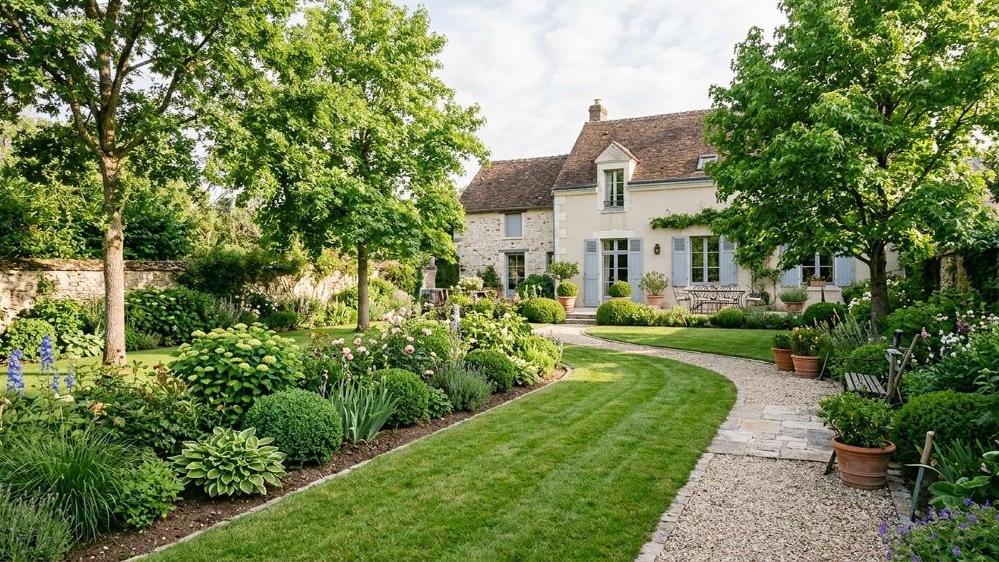
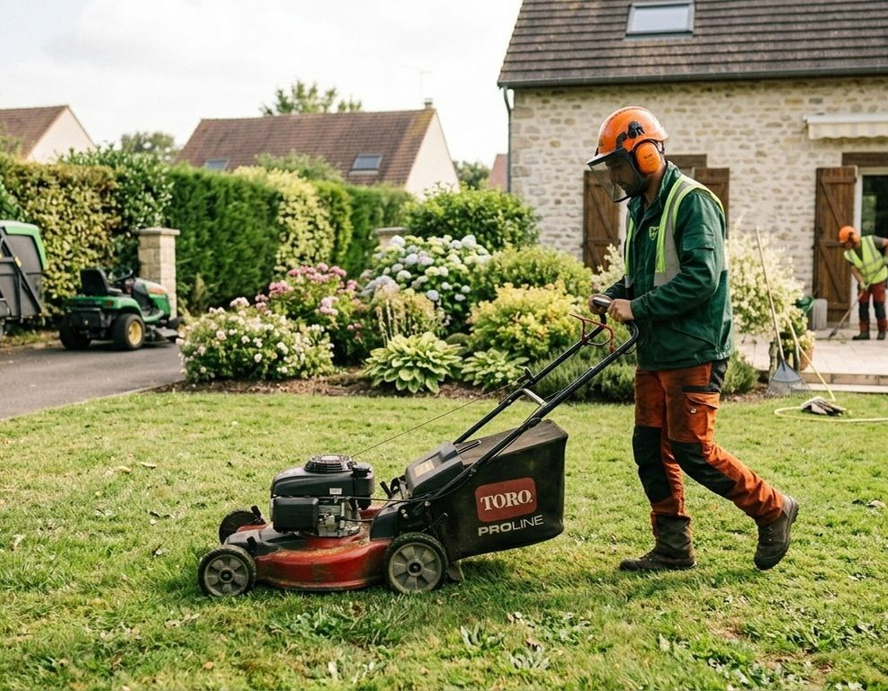
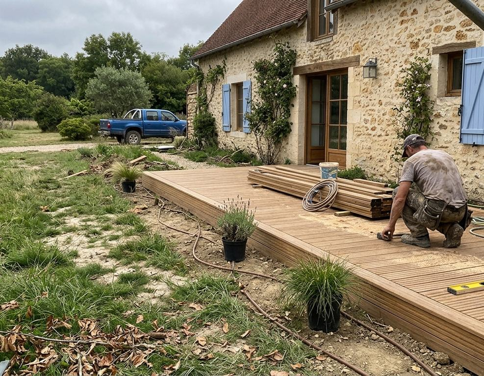

Paysagiste à Jouy-en-Josas (78)
Des jardins créés et entretenus avec soin
Création, plantations, entretien, terrasses et allées à Jouy-en-Josas et dans les environs.
- Création de jardins
- Entretien d'espaces verts
- Zone Jouy-en-Josas (78)
Nos prestations
Du plan du jardin à son entretien
Quatre prestations pour créer, planter, entretenir et aménager votre extérieur.

Création de jardins
Massifs, pelouse et espaces de vie conçus selon votre terrain et vos usages.
En savoir plus →
Plantations et massifs
Arbustes, vivaces et massifs choisis selon la nature de votre sol.
En savoir plus →
Entretien d'espaces verts
Tonte, taille de haies et soin des massifs, ponctuellement ou régulièrement.
En savoir plus →
Terrasses et allées
Terrasses en bois, allées dallées ou pavées pour prolonger la maison.
En savoir plus →À propos
Un paysagiste à Jouy-en-Josas
Julien Tescou dirige l'entreprise, installée à Jouy-en-Josas, dans les Yvelines.
Pour un projet de création, de plantation ou d'entretien, appelez le 06 82 22 54 81.
- Création de jardins
- Plantations et entretien
- Terrasses et allées
Contact
Un projet de jardin ? Parlons-en.
Décrivez-nous votre projet : nous vous répondrons pour en discuter.